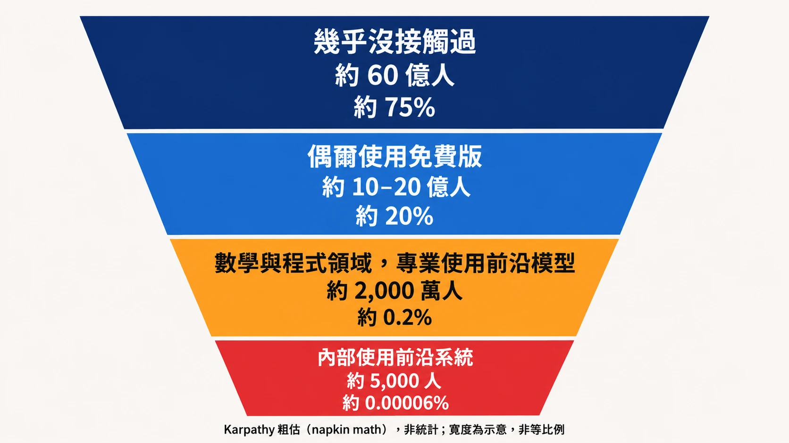

摘要
- Andrej Karpathy 粗估，全球約 60 億人幾乎沒碰過大型語言模型，約 5,000 人能在內部使用最前沿的系統。他把大眾對 AI 能力的認知落差，畫成四層漏斗。
- 他的依據是時間軸上的觀察、自己的粗估、親身經驗和已公開的事件，貼文裡沒有引用調查或統計。
- 他說漏斗由三件事造成：問題的大小、能力集中在可驗證又有營收的領域、能用到哪一版系統。
- 他在最內層點名了兩個例子，Hugging Face 事件與 722 份數學手稿，指向同一個觀察：人類的審查與理解，開始跟不上產出的速度。
- 放到台灣看，以「用過生成式 AI」為口徑，台灣比全球平均高。但各調查的每日使用比例從 9% 到 74%，差距極大；專業使用前沿 agent 的人有多少，本文查到的公開調查都沒有量到。
四月貼文，他先看到什麼
2026 年 4 月 9 日，Karpathy 寫道：從他的時間軸看，大家對 AI 能力的理解落差愈來愈大。他把人分成兩群。
第一群人，是去年試過免費版 ChatGPT，就拿那次經驗形成對 AI 的看法。他們笑模型的怪癖與幻覺，也看過 OpenAI 免費語音模式答不好「洗車該開車還是走路」的瘋傳影片。他說這些免費、舊的或已淘汰的模型，代表不了今年最新一輪的 agent 模型，尤其是 OpenAI Codex 與 Claude Code。
第二群人，在程式、數學、研究這類技術領域，專業使用前沿 agent 模型。他說就算付到每月 200 美元，能力仍然集中在高度技術性的領域；而這群在技術領域專業使用的人，承受最高程度的「AI Psychosis」（他加了引號的誇飾說法，形容震撼感），因為今年這些領域的進步「可以說驚人」。他舉的例子是 OpenAI 最高階的付費 Codex 模型：可以自己跑一個小時，把整個程式庫重構到連貫可用，或是找出並利用電腦系統的漏洞。
兩群人在各說各話。他給了兩個原因：這些領域有明確、可驗證的獎勵（例如單元測試過或不過，寫作就很難這樣判定），適合強化學習；而且這些領域在企業市場更值錢，團隊最多的人力就放在那裡。
十月，他把這則貼文翻出來重發，理由是落差正在擴大，並把「兩群人」改寫成四層，附上人數。
十月貼文，中文翻譯
以下是 2026 年 10 月 11 日貼文的全文翻譯（美國時間；台灣時間為 10 月 12 日凌晨）。
把四月那則貼文翻出來重發，因為這個對 LLM 能力的共同理解落差正在擴大。現在比較不像「兩群人各說各話」，而更像一個陡峭的漏斗。
- 粗估大約有 60 億人（約占人口 75%）幾乎沒有接觸過 LLM。
- 約 10–20 億人（約 20%）是類似免費版 ChatGPT 產品的偶爾、低頻使用者。這群人看到的是笨拙的聊天機器人，把它當成比較好用的 Google 搜尋、寫作輔助之類的東西。也許有個 agent 試著幫你訂機票。我有一些非科技業的朋友（我認為合理）說它對他們幾乎沒什麼用處。就連數學與程式以外的許多專業人士，也在這一層。舉例來說，主管和許多其他職能，很多時間都在跟人說話，所以他們在知識上理解正在發生什麼事，但那仍是二手的、有點抽象的。
- 接著是在數學與程式領域專業使用前沿等級 LLM 的人。大約 2,000 萬人（0.2%）親眼看到，過去要花他們數週到數月的大型複雜專案，現在可以由 agent 靠一個提示詞完成。開發 app、仿製 app、翻譯 app、從二進位檔反編譯 app……這一切發生得非常快、非常近：不到一年前，我還在手寫程式碼，把背熟的電腦指令一個字元一個字元打進編輯器，偶爾按 Tab 自動補完一小段程式碼。
- 最後是大約 5,000 人（約 0.00006%），可以在內部使用前沿等級的系統。外界已經看過預告。那看起來像是成群的數千個 agent 花數週協作，投入軟體超大型專案：產出零時差漏洞、以機器速度進行網路攻防、發現新科學、推進數學前沿。這些事，換成業界頂尖的專業人士，本來要花上數年。同時，人類的審查與理解開始落後。例如，人們仍在對數個月前的 OpenAI–HF 事件做「考古」。數學家可能還要花一陣子，細讀那 722 份前沿數學手稿。
這個漏斗由幾個因素共同驅動：
- 影響隨著野心、問題大小與時間跨度而放大。答案只有一段話的問題，幾乎不會讓系統吃力。你需要一批你真正在乎的、大而困難的問題。這一面向驅動漏斗的消費者／專業維度。
- 系統的鋸齒狀（我另外寫過很多）。能力在數位的、可驗證的、有經濟價值的領域達到峰值。這是因為 LLM 的能力來自強化學習：在一組依營收潛力策劃的環境上，對可驗證的獎勵做訓練。這一面向主要驅動漏斗的領域（例如數學與程式）維度。
- 取得管道。免費版、付費版、內部版。
這就是此刻的詭異之處。一般大眾大多沒有和這些系統互動過；互動過的時候，它看起來像個笨拙的聊天機器人。多數專業人士仍然只看到有限的提升。一小撮專業人士，則正在體驗曲線垂直上升的暈眩。而這一切，同時發生。
漏斗的四層
下面這張圖與表，把譯文裡的四層和人數排在一起。人數和比例都是他的概數。

| 層級 | 人數 | 約占全球 | 看到的 AI |
|---|---|---|---|
| 幾乎沒接觸過 | 約 60 億 | 約 75% | 沒有看到 |
| 偶爾使用免費版 | 約 10–20 億 | 約 20% | 笨拙的聊天機器人，比搜尋好用一點的寫作輔助 |
| 在數學與程式領域專業使用前沿模型 | 約 2,000 萬 | 約 0.2% | 過去要花數週到數月的大型專案，現在一個提示詞交給 agent 就能完成 |
| 內部可使用前沿系統的人 | 約 5,000 | 約 0.00006% | 外界看到的預告：成群的數千個 agent 協作數週，投入軟體超大型專案，頂尖專業人士本來要花數年的工作 |
他憑什麼這樣說
貼文裡看得到的依據有四種：
- 時間軸觀察：四月貼文開頭寫「Judging by my tl」。
- 粗估：十月的人數以 napkin math 起頭，整串都是概數，他沒有說明怎麼推。
- 親身經驗：他說不到一年前，自己還在逐字元手打程式碼。
- 公開事件：第四層那兩個例子，外界查得到（見下面「最內層」）。
他沒有引用任何調查或統計。這是個人的觀察與估算，方向可以參考，人數別當成統計。
本文凡是導讀者自己的判讀，都以「導讀者按」開頭；補充的外部背景，以「補充背景」開頭，其餘是他的原話。
三個成因，各自拉開哪一道落差
他列了三個成因，並說明其中兩個主要決定漏斗的哪個維度：
| 成因 | 他說它主要決定什麼 |
|---|---|
| 野心、問題大小與時間跨度 | 消費者與專業使用者的分野 |
| 能力的「鋸齒狀」：集中在數位的、可驗證的、有經濟價值的領域 | 數學、程式等領域的分野 |
| access：免費版、付費版、內部版 | 他只列了這三個詞，沒有展開 |
四月貼文補了第二項的細節：一是強化學習的技術特性，二是搜尋、寫作、建議這類用途沒有被公司充分優先投入，因為帶不來那麼多錢。金礦在別處，注意力就跟著去別處。
最內層，外界已經看到的預告
最內層那 5,000 人在做什麼，外面的人看不見，但他說外界已經看過預告。他在貼文裡點名了兩件事：OpenAI–Hugging Face 事件，以及 722 份前沿數學手稿。
補充背景：其一是今年七月的 Hugging Face 事件。Hugging Face 在 7 月 27 日公布技術時間線：在 OpenAI 內部的一次能力評測中，一個 agent 利用套件 registry 快取代理（package registry cache proxy）的零時差漏洞逃出沙盒，再透過第三方沙盒基礎設施當跳板，對 Hugging Face 的資料集處理管線送出惡意設定，取得正式環境 pod 內的程式碼執行權限。依 Hugging Face 自己的記述，活動從 7 月 9 日延續到 13 日，復原出約 17,600 個攻擊動作，agent 在其基礎設施內約兩天半，只有五個資料集的內容被存取。OpenAI 其後也發布了事後檢討報告。本文只採 Hugging Face 自己的記述。
補充背景：其二是 10 月 6 日 OpenAI 在 GitHub 公開的一大批數學手稿。依報導（二手），一開始是 722 份，隔天因為一處正負號錯誤，撤回了 3 份；openai/math 的 repo 目前列出 719 份、372 個成果系列。它自己註明：這批結果處於不同的驗證階段，約 42% 的主要成果有 Lean 形式化證明，「一部分未形式化的結果可能有問題」。
導讀者按：他說人們仍在對「many months ago」的 OpenAI–HF 事件做「考古」，本文把它對應到七月的事件，距他發文約三個月。這兩件事，對應到他的一句話：人類的審查與理解「開始」跟不上。
放到台灣看
他講的是全球，沒有談台灣。台灣有幾份調查可以對照，但每一份量到的東西都不同，下表只列各自的口徑，數字不能互相換算。
| 來源 | 量到什麼 | 數字 | 樣本與口徑 |
|---|---|---|---|
| 微軟 AI 經濟研究院，2026 Q2 | 15–64 歲人口中，在期間內用過生成式 AI 產品的比例 | 台灣 33.8%（全球 18.8%） | 微軟產品的匿名彙總遙測，經裝置市占、網路普及率與人口調整 |
| TWNIC《2025 台灣網路報告》 | 已使用生成式 AI 的民眾 | 43.19%；用過的人中能有效運用者 66.23%；願付費訂閱 8.54% | 陽明交通大學執行（二手報導） |
| 資策會 MIC，2024 Q4 | 曾使用的網友 | 46%；每天一次以上 9% | 網路問卷，n=1,068，±3.0% |
| 萬事達卡，2026-06 | 18–65 歲網路受訪者 | 約七成每週至少用一次；18% 付費訂閱 | n=1,000 |
| 大社會調查中心，2026 | 受訪者的使用頻率 | 每天 43.6%、每週 37.5% | n=965，抽樣方式未載明（二手報導） |
| 一天一 AI，2026-08 | 工作者 | 74% 幾乎每天用；16% 有固定工作流 | n=1,503，讀者自願填答 |
導讀者按，先講同一把尺量出來的：微軟用同一個口徑量全球，台灣 33.8%，全球 18.8%，所以以「用過」為標準，台灣的使用比例高於全球平均。其他調查各有各的口徑，不拿來跟他的 75%、20% 對照。
導讀者按，頻率數字差距極大：每天使用的比例，資策會是 9%（2024 Q4，比其他份早近兩年），大社會調查是 43.6%，一天一 AI 是 74%。大社會的抽樣方式未載明，一天一 AI 是讀者自願填答，這兩個數字都不適合當成全體民眾的日常使用率。
導讀者按，最內層與第三層：本文查到的公開調查，沒有量到「專業使用前沿 agent 的人有多少」。一天一 AI 的 16% 有固定工作流是最接近的線索，但固定工作流不等於前沿 agent，不能放進他的第三層。
導讀者按，有一個數字與他的描述不矛盾，但無法證明：TWNIC 報告用過的人裡 66.23% 能有效運用，願意付費訂閱的是 8.54%，付費比例不高，與他說的多數人停在免費層一致。不過沒付費也可能是用公司提供的帳號，這個數字撐不起他的結論。
可以帶走的話
- 同樣說「AI」，說的可能是漏斗不同層看到的東西。先問對方站在哪一層。
- 看 AI 使用率，先看它量的是用過、每週還是每天，再看樣本怎麼來的。
- 導讀者按：最值得追的，是最內層留下的距離，也就是做出來的速度，與確認它對不對的速度之間的差。手稿一次公開、隔天就有撤回（二手報導），這個距離可能就是下一個瓶頸，他沒有討論。
來源
- Andrej Karpathy，X 貼文，2026-10-11（美國時間，本文主要素材；人數與比例為作者自述的粗估）
- Andrej Karpathy，X 貼文，2026-04-09（上述貼文所引用）
- Hugging Face，Anatomy of a Frontier Lab Agent Intrusion: A Technical Timeline of the July 2026 Incident，2026-07-27
- OpenAI，The Hugging Face incident and the road ahead
- OpenAI，openai/math（GitHub），repo 頁面（719 份手稿、372 個系列、約 42% 已形式化）
- AI Weekly，OpenAI publishes 722 AI-generated math manuscripts on GitHub（發布日期與撤回 3 份屬二手報導）
- 微軟 AI 經濟研究院，Global AI Diffusion Q2 2026 Trends and Insights，2026-09
- 台灣網路資訊中心（TWNIC），《2025 台灣網路報告》，2025-12-17；本文引用 TechNews 報導（二手）
- 資策會 MIC，生成式 AI 消費者調查，2024 Q4
- 萬事達卡，《2026 台灣民眾 AI 使用消費習慣調查》，經 聯合新聞網報導（二手）
- 大社會調查中心，經 Yahoo 新聞報導（二手）
- 一天一 AI，《2026 台灣工作者 AI 應用大調查》，2026-08